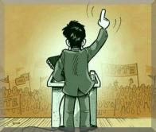
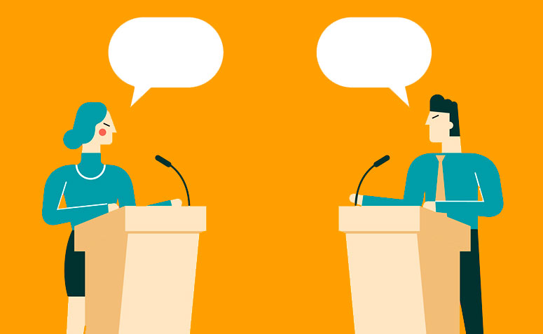

<html>

<head>
    <title>Demagogia</title>
    <link rel="stylesheet" type="text/css" href="pagina6.css" />
</head>

</html>

<body>
    <h1>Demagogia</h1>
    
    <br>
    <br>
    
    <br>
    <a href="index.html">Início</a>
    <a href="pagina1.html">Monarquia</a>
    <a href="pagina2.html">Aristocracia</a>
    <a href="pagina3.html">Democracia</a>
    <a href="pagina4.html">Tirania</a>
    <a href="pagina5.html">Oligarquia</a>
    <div>
        <h2>O que é demagogia?</h2>
        <figure>
            
            <figcaption>A arte de manipular e agradar.</figcaption>
        </figure>
        <p><mark>Demagogia é um conceito utilizado na tradição do pensamento político que possui um sentido geralmente
                negativo:
                ela significa manipulação, persuasão e apelo a uma grande quantidade de pessoas por meio dos
                sentimentos.</mark>
            Por
            isso, a demagogia é considerada o contrário da argumentação que, por sua vez, visa apresentar apenas ideias
            racionais e ponderadas sobre um tema, sem persuadir o ouvinte.</p>
        <p>Demagogia vem do grego e significa, literalmente, “a arte ou a técnica de conduzir um povo.” Podem existir,
            porém, pelo menos dois sentidos diferentes para a demagogia: um mais geral e outro mais específico.</p>
        <p>No sentido genérico, a demagogia pode ser qualquer tipo de técnica de discurso ou mesmo um estilo político
            que
            tem o objetivo de seduzir as pessoas. Para isso, um político demagogo pode apelar para os sentimentos, as
            vontades e os anseios de um povo (geralmente os mais pobres), criando promessas que não serão cumpridas e
            falsas
            informações.</p>
        <p>No sentido mais específico, a demagogia pode ser uma forma de governo que surge da crise ou decadência de um
            sistema governado pelo povo. Originalmente, a demagogia como forma de conduzir um povo não tinha um sentido
            negativo, dependendo das intenções do demagogo. Entretanto, na Grécia Antiga, Platão e Aristóteles apontaram
            a demagogia como um risco para um governo do povo.</p>
        <p>Aristóteles defendeu que a demagogia era o oposto da democracia: enquanto a demagogia diz respeito aos
            interesses privados, irracionais e manipuladores dos demagogos, a democracia é feita por meio do debate
            racional e da argumentação pensando no bem público.</p>
    </div>
    <div>
        <h2>Populismo e demagogia</h2>
        <p>Populismo é um termo utilizado para descrever uma política de governo que exerce ações para agradar o povo,
            mas apenas com o interesse de manter-se no poder. Portanto, esse fenômeno visa manter as desigualdades entre
            Estado e sociedade, pelo menos em seu sentido mais tradicional.</p>
        <p>Por isso, populismo e demagogia muitas vezes estão na mesma frase, porque ambas dizem respeito a um dirigente
            político interesseiro e que conduz o povo ao engano. Porém, para alguns autores, o populismo descreve um
            período político em particular: no Brasil, de 1930 a 1964. Assim, este termo possui uma conotação
            historicamente mais específica.</p>
    </div>
    <div>
        <h2>Demagogia e hipocrisia</h2>
        <p>A hipocrisia é o ato de dissimular duas vezes: uma, por fingir ou mentir sobre as verdadeiras intenções,
            sentimentos ou o que se é; outra, por tentar encobrir que é hipócrita. Em outras palavras, o indivíduo no
            discurso diz que é algo, mas não o é.</p>
        <p>Consequentemente, apesar de ter diferenças, a hipocrisia e a demagogia estão relacionadas. As duas palavras
            divergem também porque a demagogia faz uma referência mais específica ao campo político, enquanto a outra é
            de
            uso mais geral.</p>
    </div>
    <div>
        <h2>Exemplos de demagogia</h2>
        <p>Sendo a demagogia um conjunto de técnicas ou um estilo político, podemos listar alguns exemplos de
            estratégias de persuasão utilizadas pelos demagogos:</p>
        <p><mark>Falácia:</mark> significa engano. Resumidamente, são argumentos que se passam por verdadeiros, mas
            levam as pessoas
            ao equívoco, má compreensão e decisões ruins. Exemplo: “Devemos aceitar a nova política econômica. As
            pessoas não podem mais viver na miséria, sem ter condições de alimentar os seus próprios filhos.” Uma pessoa
            pode considerar ruim viver na miséria, mas isso não quer dizer que ela concorde com a nova política
            econômica.</p>
        <p><mark>Táticas de distração:</mark>é uma maneira de trazer a atenção do público para assuntos que não estão
            ligados ao
            tema principal e não tratar de questões indesejadas. Exemplo: “Pergunta: como você pretende combater a caça
            ilegal em seu governo?”. “Resposta: Eu adoro animais, cresci no sítio. Minha filha tem três cachorros.” A
            pergunta sobre quais serão as medidas para combate à caça não foi respondida.</p>
        <p><mark>Bajulação:</mark> é elogiar, adular, prestigiar uma pessoa com a intenção de receber algo em troca.
            Exemplo: “Os
            moradores dessa cidade são pessoas honestas. Tenho um grande carinho por esse lugar. Quando eu estiver no
            poder, trabalharei para beneficiá-los.” Não foi apresentado um projeto político para a cidade que garantisse
            o trabalho do candidato político. O que esteve presente no discurso foram apenas elogios aos moradores.</p>
        <p><mark>“Discursos vazios”:</mark> ocorre quando alguém usa jargões ou palavras consideradas difíceis, a fim de
            causar um
            impacto emocional no público – mas sem um conteúdo real. Exemplo: “Nesse Dia Internacional das Mulheres
            quero louvar o trabalho de todas as brasileiras. As mulheres são importantes em qualquer sociedade. Seus
            méritos são notórios.” Nada foi dito, ao final, sobre qual é a importância das mulheres, quais os seus
            méritos ou a razão de serem homenageadas.</p>
        <p><mark>Mentiras:</mark> quando o objetivo é difamar o adversário e causar revolta no público, mentiras são
            utilizadas.
            Exemplo: “A candidata que concorre ao cargo comigo é uma mulher antipática, infeliz e é envolvida com
            corruptos.” Nesse caso, nada do que foi dito é comprovado e tem o objetivo de causar uma comoção negativa
            contra a pessoa adversária.</p>
    </div>
    <div>
        <h2>O sucesso das demagogias</h2>
        <video width="320" height="240" controls>
            <source
                src="videos/Leandro Karnal fala sobre rótulos, demagogia e verdades _ Falou e disse! _ Saia Justa.mp4"
                type="video/mp4">
        </video>
        <p>Nesse vídeo, é reiterada a ideia de Aristóteles sobre a demagogia, ou seja, que se trata de discursos
            irracionais visando apelar apenas aos sentimentos das pessoas, levando ao engano. Para se “imunizar” desses
            discursos, o debate racional e ponderado seriam as “vacinas”.</p>
    </div>
    <div>
        <h2>Demagogia e ideologia</h2>
        <video width="320" height="240" controls>
            <source
                src="videos/Ideologia x Demagogia.mp4"
                type="video/mp4">
        </video>
        <p>Ideologia, populismo, personalismo… Todas essas palavras são conceitos importantes na ciência política,
            descrevendo fenômenos específicos. No vídeo, é apresentado como as pessoas acabam não se atentando para as
            ideologias políticas e se emocionam com os discursos demagógicos.</p>
        <p>Atualmente, a demagogia possui geralmente uma conotação negativa, sendo usada até para ofender um adversário
            político, por exemplo. Entender o seu conceito é importante para compreender o pensamento político ocidental
            e a filosofia por trás da nossa democracia. Além disso, conhecer as suas estratégias pode nos ajudar a
            eventualmente até identificar um discurso demagógico.</p>
    </div>
</body>
<p><a href="https://www.todoestudo.com.br/sociologia/demagogia">Fonte: Todo Estudo</a></p>
<foster>Desenvolvido por Arthur Carmello</foster>
</hmtl>